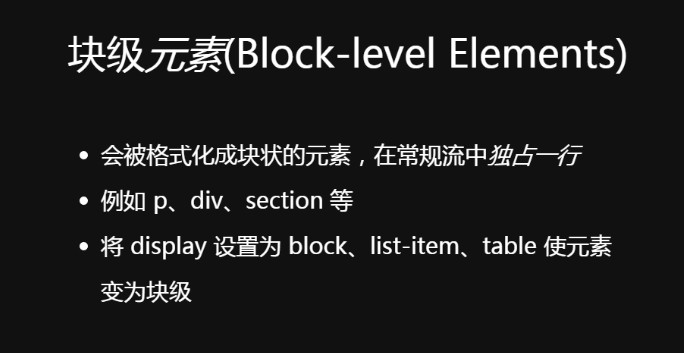
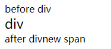
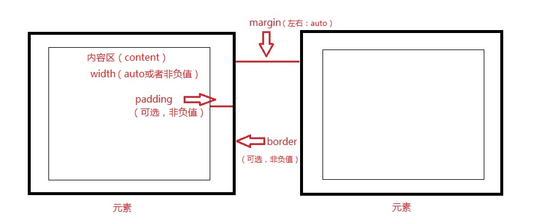
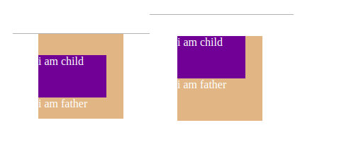

盒模型（元素框）
任务目标：学习CSS盒模型是如何工作的，以及如何在页面上布局单个元素。如何调试 CSS的基础知识。测试对 CSS 理论、语法、机制的基本理解。
盒子有时也译作“框”。
盒模型定义：文档中的每个元素都被构造成文档布局内的一个矩形盒子。每个盒子（框）由四个部分（或区域）组成，由它们各自的边界定义：内容边界，内边距边界，边框边界和外边距边界。
块级元素与盒子是两个不同的概念，盒子是在排版的时候，浏览器放置东西时的方式。
盒子模型的意思是 具备内容、内边距、边框、外边距这些属性，行内元素和块级元素都是盒子模型。元素盒子模型的类型用display属性指定，一般我们关注三个最常见的类型：block, inline, 和inline-block。
不同的元素



一、块级元素（block）的特点：
1、新起一行为开始；也就是会自动换行
2、高度，行高以及外边距和内边距都可控制；
3、宽度默认是它的容器的100%，除非设定一个宽度；
4、它可以容纳行内元素和其他块级元素。
二、行内元素（inline）的特点：
1、和其他元素都在一行上；
2、宽度就是它的文字或图片的宽度，不可改变；也就是说宽度取决于内容的宽度
3、设置宽度width无效。
4、设置高度height无效，可以通过line-height来设置；也就是说高度取决于内容的行高
5、设置margin只有左右margin有效，上下无效；
6、设置padding只有左右padding有效，上下无效。注意元素范围是增大了，但是对元素周围的内容没影响的；
8、行内元素只能容纳文本或者其他行内元素。

行内元素包含了块级元素，块级元素又是独占一行的，所以出现了行内元素本来一行的，结果被div这个怪胎撑开了，
从此 beforediv 文本和 afterdiv 文本分隔两地，一年只能见一次
为什么不推荐行内元素包含块级元素？
这关乎HTML的语义，而且行内元素用来表示具体内容，块级元素用来布局，还是有层级的关系在里面的
三、行内块（inline-block）元素特点：
inline-block 元素创建了一个行级的块容器，该元素内部（内容）被格式化成一个块元素，同时元素本身则被格式化成一个行内元素。
1、不会自动换行
2、默认排列方式为从左到右
3、设置width、height有效
4、设置margin，上下左右有效
5、设置padding，上下左右有效
行内元素与行内块元素的区别
行内元素内嵌块级元素。高度被子元素撑大，而宽度和父级一致（父级是body就是body的宽度）。
行内块元素内嵌块级元素。宽高都会被子元素撑大的。
盒子的生成
● 常用行内级元素：<span>、<strong>、<br>、<a>、<img>、<label>、<input>、<select>、<textarea>
● 常用块级元素：<div>、<hx>、<p>、<ul>、<dl>、<form>、<header>、<article>、<section>、<aside>、<footer>、<table>、<th>、<tr>、<td>
● 常见行内块级元素：<img>（替换元素）、<input> （替换元素）


走进盒子模型





每个盒子（框）由四个部分（或区域）组成，由它们各自的边界定义：内容边界，内边距边界，边框边界和外边距边界。
1、内容区受内容边界限制，包含元素的“真实”内容，例如文本，图像或视频播放器。它通常有背景颜色或背景图像。
如果box-sizing属性设置为content-box（默认值）,可以使用width，min-width，max-width，height，min-height和max-height属性显式定义内容区域的大小。
2、边框的粗细由border-width 和 border简写属性决定，如果border-color没有设置颜色，border-color会取元素内容的前景色。
边框样式如果有缝隙可以看到元素的背景。背景会应用于由内容和内边距，边框组成的区域。
如果box-sizing属性设置为border-box，可以使用width，min-width，max-width，height，min-height和max-height属性显式定义边框区域的大小。
3、外边距是透明的，一般用来控制元素之间的间隔，可以从外边距中看到父元素的背景。
注意：
width、height默认值为：auto！只有width、height和margin能为auto!所以没有padding: 0 auto!
border、padding和margin的默认值为：0！
width、height、内边距（padding）和边框（border）都不能为负值，只有外边距（margin）可以为负值!
width的值为百分比时，参考的是父元素盒子的width。
height的值为百分比时，参考的是父元素盒子的height。height不适用百分比单位，会被浏览器忽略。原因：如果父元素height为auto，只要子元素在文档流中（即position不等于fixed或者absolute），子元素height设置百分比值会完全被忽略了。
如果想让一个元素的百分比高度起作用，你需要给这个元素的父元素高度设置一个特定的高度值!
padding的值为百分比时，参考的是父元素的width。
margin的值为百分比时，参考的是父元素的width。
浏览器像素宽高一般为：1280px x 720px
border的值无法设置为百分比！border设置边框宽度会忽略百分比单位。
border-width: 10px 10px 10px 10px; 也是按照上右下左来应用的！
背景会应用于由内容和内边距，边框组成的区域。边框是画在背景之上的。背景并不在外边距下层——外边距不是元素区域的一部分，而是元素外面的区域。
margin:0 auto只对块级元素生效。使用margin: 0 auto;时不管有没有内容，前提是一定要有固定宽度的width。
margin:0 auto对具有包裹性的元素（即脱离标准流的元素）无效，就好比父元素所在的标准流比喻成地表，那包裹性元素就已经上天了。没有了可供参考的父元素宽度进行auto。
注意：

（普通流中）行内元素设置width、height无效！
确切地说，width、height属性对行内非替换元素无效!
<a>、<span>、<strong>、<em>等等（很多很多）都是行内非替换元素。
（因为除了<img>、<input>、<textarea>、<select>、<object>、<video>等替换元素以外的元素都是非替换元素）
行内元素设置上下的padding、margin都无效。对于行内元素来说margin只有margin-left和margin-right有效，padding只有padding-left和padding-right有效！
子块级元素不会继承父块级元素的宽高。一般地，大多数盒子模型属性不会被继承。如果在容器元素上设置这些属性并让它们由每个子元素继承，那么样式/布局会发生混乱。
如果一个块级元素的上、下外边距设置为auto，上、下外边距会自动计算为0。左右设置为auto则会在父元素内水平居中。margin: auto; 等同于margin: 0 auto;。
盒子模型的类型：

css3新增的 box-sizing 属性的值 content-box 就是标准盒模型，border-box 就是 IE 盒模型。
W3C 标准盒模型和 IE 盒模型（怪异盒模型）
W3C 标准盒模型（content-box）：属性 width 和 height 只包含 content，不包括 border 和 padding
设置 box-sizing: content-box;
width = 左右content
height = 上下content

IE 盒模型（border-box）：属性 width 和 height 包含 border 和 padding，指的是 content + padding + border

也就是说：设置 box-sizing: border-box; width 和 height 会将 pading 和 border 的值吞掉，
width = 左右content + 左右padding + 左右border
height = 上下content +上下padding + 上下border

box-sizing 属性设置width,height延伸的区域，通常用于响应式布局。
例如当您想要一个内容总宽度为50％，而边框和内边距以像素表示的盒子，使用box-sizing: border-box;

基本术语和概念
元素框是指margin box，元素框: 内容区（width/height） +内边距 （padding） +边框 （border） + 外边距（ margin）。
可见元素框（背景区，border box的区域）：内容区（width/height） +内边距 （padding） +边框 （border）。可见元素框（盒）宽高 不等于 内容区宽高。
背景会应用于由内容和内边距，边框组成的区域！
内容区：width/height。
块级元素就从上到下排列，遇到行内元素则从左到右排列。这种无样式的情况下，元素的分布叫正常流。
块级元素生成块级框，行内元素生成行内框。
包含块：每个元素相对于其包含块摆放。由最近的块级祖先框、表单元格或行内块祖先框的内容边界（edge）构成。块级元素的布局摆放依赖包含块，行内元素的摆放方式并不直接依赖包含块。


替换元素与非替换元素
宽高属性对行内非替换元素无效，所以行内非替换元素不能设置宽高！对于行内非替换元素，尽管内容周围存在内边距与边框，但内容占用空间由 line-height 属性决定。但是浮动后的行内非替换元素可以使用width和height。
html元素（行内元素+块状元素）分替换元素与非替换元素。
替换元素（Replaced element）
替换元素就是浏览器根据元素的标签和属性，来决定元素的具体显示内容，是其内容不受CSS视觉格式化模型控制的元素。
替换元素通常有其固有的尺寸（宽度和高度是有元素自身定义的,不受周围元素的影响，一些CSS属性比如vertical-align可能会用到替换元素的固有尺寸或基线。）：一个固有的宽度，一个固有的高度和一个固有的比率。
例如浏览器会根据<img>标签的src属性的值来读取图片信息并显示出来,而如果查看html代码，却看不到图片的实际内容，img元素的内容通常会被src属性指定的图像替换掉。又例如根据<input>标签的type属性来决定是显示输入框，还是单选按钮等。
替换元素（块级替换元素与行内替换元素）的性质同设置了display:inline-block的元素一致。
行内元素：HTML中的<img>、<input>、<textarea>、<select>、<object>、<video>都是替换元素，而且是行内替换元素，所以可以设置宽高。
这些元素往往没有实际的内容，是一个空元素。
CSS渲染模型不考虑替换元素内容的渲染。
替换元素和非替换元素是已经被替换(CSS不负责其展示渲染,由其固有属性替换接管渲染)和不会被替换(由CSS负责展示渲染)，而不是可不可以被替换的概念，不能翻译为可替换元素和不可替换元素。
非替换元素（non-replaced element）
除了<img>、<input>、<textarea>、<select>、<object>、<video>等替换元素以外的元素都是非替换元素,由CSS的视觉格式化模型负责非替换元素的渲染。
例如：<a>、<span>、<strong>等等（很多很多）是行内非替换元素。
块级元素：也有替换元素与非替换元素之分->比如：嵌入的文档（<iframe>之类），还有<audio>和<canvas>、<option>在某些特定情形下也是替换元素，使用CSS的content属性插入的对象是匿名替换元素。
对非替换块级元素与非替换行内元素，padding与margin的影响不一样。
怎么知道是不是块级元素？
分别加上不同的background，设定一定的width和height


参考：
盒子模型布局稳定性

了解宽度剩余法

水平格式化（水平布局）
“鑫三无准则”，即“无宽度，无图片，无浮动”
所谓流动性，并不是看上去的宽度100%显示这么简单，而是一种margin/border/padding和content内容区域自动分配水平空间的机制。
无宽度指的是父元素设定宽度，子元素不设置默认为 width: auto 。
格式化宽度出现在“绝对定位模型”中，也就是出现在position属性值为absolute或fixed的元素中，
在默认情况下，绝对定位元素的宽度表现是“包裹性”，宽度由内部尺寸决定；
但是，有一种情况其宽度是由外部尺寸决定的，
对于非替换元素，当left/top或top/bottom对立方位的属性值同时存在的时候，元素的宽度表现为“格式化宽度”，
其宽度大小相对于最近的具有定位特性（position属性值不是static）的祖先元素计算。
例如，下面一段CSS代码：
div {positon: absolute; left: 20px; right: 20px}
假设该<div>元素最近的具有定位特性的祖先元素的宽度是1000像素，则这个<div>元素的宽度是960（即1000-20-20）像素。
此外，和上面的普通流一样，“格式化宽度”具有完全的流体性，也就是margin、border、padding和content内容区域同样会自动分配水平（和垂直）空间。
块级元素的 width 默认为100%撑满父元素，行内元素根据其自身的内容或子元素来决定其宽度。
width:auto; 与height:auto;都是指元素本身内容区的宽度和高度，由内容决定。
auto是自适应的意思，auto是很多尺寸值的默认值，也就是由浏览器自动计算。例如使用auto属性后，父元素宽度发生变化，该元素的宽度也会随之变化。
width:100%和height:100%都是父元素内容区的宽度和高度。即
margin-left + border-left+ padding-left +width（width变为width:100% → 子元素内容区宽度变为父元素内容区宽度） + padding-right + border-right + margin-right = 父元素内容区width
margin-top + border-top+ padding-top +height （height变为height:100%→ 子元素内容区高度变为父元素内容区高度）+ padding-bottom+ border-bottom + margin-bottom = 父元素内容区height


width:auto;和height:auto;自动计算剩余宽度和高度。无论给多少宽高的padding，margin或者border，width:auto;和height:auto;都不会将子元素撑破父元素。
margin-left + border-left+ padding-left +width + padding-right + border-right + margin-right = 父元素内容区width（包含块宽度）
margin-top + border-top+ padding-top +height + padding-bottom+ border-bottom + margin-bottom = 父元素内容区height（包含块高度）
蓝色和粉色都是块级元素，设置粉色子元素为width:auto，


满足水平格式化
HTML 的大多数元素是非替换元素，即其包含在文档中的内容会直接表现给用户端（例如浏览器）。宽高属性对块级元素和替换元素有效。


width只指内容区的宽度。
整个元素框（盒）实际页面所占宽度 = 左外边界到右外边界的距离。
对于正常流的一个元素，包含块由最近的块级元素祖先框、表单元格或行内块祖先框的内容边界（content edge）组成。
正常流中块级元素框的水平部分的总和等于父级元素的width，即整个元素框（盒）实际页面所占宽度 = 左外边界到右外边界的距离=父元素内容区width，
例如：一个<div>的内容区width=<p>的width和左右padding、margin。
公式：margin-left + border-left+ padding-left +width + padding-right + border-right + margin-right = 父元素内容区width（包含块宽度）


使用auto（自动水平属性如何决定块级元素的宽度）
遵循元素的7个水平属性的总和等于父元素的width。
auto：在水平格式化中弥补水平部分实际值与水平部分总和的差距。（简单理解：自动填充剩余空间） 其他：没有父元素时自动根据内容确定所需长度
1、三个水平外边距和width设置为具体值时，margin-right会被浏览器（用户代理）偷偷地重置为auto,然后改为某个值（即使在开发者工具中也看不到；适用于从左往右读的语言;从右往左读的语言重置的是margin-left）：

2、width为具体值，一个水平外边距设为auto，填充剩余空间，另一个水平外边距按具体值算：
例子：margin-left : auto; margin-right:100px;

3、width为具体值，两个水平外边距设为auto，平分剩余空间（所以margin:0 auto必须要定宽！）：

4、一个水平外边距为具体值，另一个水平外边距和width设为auto，设置auto的水平外边距减为0：
例子：margin-left : auto; width: auto; 左边水平外边距减为0

5、两个水平外边距和width设为auto（所以margin:0 auto必须要定宽！否则相当于两个水平外边距为0，width为auto，遵循文档流、子元素总宽等于父元素width）：

父元素的外边距、内边距、边框距可能间接影响子元素，带来子元素的偏移：

负外边距
遵循元素的7个水平属性的总和等于父元素的width。
负左外边距：左边框再往左，border +padding + content往左靠
负右外边距：右边框再往右，border +padding + content往右靠


设置外边距值为 负外边距 或者 auto，仍然遵循元素的7个水平属性的总和等于父元素的width。


百分数
与长度规则一样，百分数也是相对父元素来说的百分比。
边框宽度不能是百分数，只能是长度值。
将长度值与百分比、auto混用造成未知值可以灵活布局（随父元素的width变化而变化）！只使用百分比无法灵活布局。

替换元素的水平格式化
替换元素就是作为其他内容的占位符，浏览器根据元素的标签和属性，来决定元素的具体显示内容。
例如浏览器会根据<img>标签的src属性的值来读取图片信息并显示出来；又例如根据<input>标签的type属性来决定是显示输入框，还是单选按钮等。
非替换块元素的所有规则适用于替换元素，除了设置 width: auto时,width=内容本来的宽度，即width是默认值时替换元素不遵循元素的7个水平属性的总和等于父元素的width。

要修改width，可以设置width为一个具体的数值，例如： width: 50px。当一个替换元素的width不同于固有宽度（设置width为一个具体的数值）时，height值也会成比例变化，除非height也设置为一个具体的数值。（所以有时可以只设置宽让替换元素成比例变化，也可以只设置高让替换元素成比例变化。）


垂直格式化（垂直布局）
一个元素的默认高度由其内容决定。（即height: auto;）
高度会受宽度影响：宽度越窄，高度越高。例如段落越窄，段落的高度越高。
内容区高度大于元素本身内容所需高度时：效果就好像增加了内边距一样。

内容区高度小于元素本身内容所需高度时需要overflow: scroll;或者overflow: auto;，利用滚动条才能看。
<p style="height: 5em; background-color:#00FFFF; overflow: scroll;">

否则：
<p style="height: 5em; background-color:#00FFFF; >


问题：为什么overflow:auto会改变内容的宽度而且内容会往右偏移？猜测：滚动条的缘故。
如果一个块级元素的height设置为百分数，则块级元素的height是其包含块height的百分数。

正常流中块级元素框的垂直部分的总和等于父级元素的height，即整个元素框（盒）实际页面所占高度 = 上外边界到下外边界的距离=父元素内容区height
公式：margin-top + border-top+ padding-top +height + padding-bottom+ border-bottom + margin-bottom = 父元素内容区height（包含块高度）
如果一个块级元素的上、下外边距设置为auto，上、下外边距会自动计算为0，影响：正常流块级元素无法在包含块中垂直居中。
办法：父元素指定高度后，子元素上、下外边距设置为25%，但是如果父元素height为auto，只要子元素在文档流中（即position不等于fixed或者absolute），子元素height设置百分比值会完全被忽略。

auto高度

第二段指的是：
如果块级父元素高度为auto,只包含块级子元素时：
1.块级父元素没设置上内边距或下内边距，或者上边框或下边框，块级父元素内容区的高度是最高块级子元素的上外边框边界到最低块级子元素的下外边框边界之间的距离。（即块级父元素内容区的高度不包括块级子元素的外边距）。
2.块级父元素设置了上内边距或下内边距，或者上边框或下边框，块级父元素内容区的高度是最高块级子元素的上外边距边界到最低块级子元素的下外边距边界之间的距离。
示例：
<div style="height: auto; background: silver;">
<p style: "margin-top: 2em; margin-bottom: 2em;">A paragraph!</p>
</div>
<div style="height: auto; border-top: 1px solid; border-bottom: 1px solid; background: silver;">
<p style: "margin-top: 2em; margin-bottom: 2em;">Another paragraph!</p>
</div>
效果图：
两段<p>都设置了相同的上下外边距，但是第一段<p>没设置边框，第二段<p>设置边框。明显看出设置了边框的第二段<p>默认高度比第一段<p>默认高度要高。
结论：块级父元素<div>高度为auto,只包含块级子元素，没设置边框的第一段块级子元素<p>不把上下外边距计算在默认高度内。设置了边框的第二段块级子元素<p>默认高度会把上下外边距计算在默认高度内。

上例中第二个div的边框改为内边距，div内容区的高度还是不变（同样会将段落的外边距包含在内）
所以当块级父元素没有设置高度、内边距和边框时，块级子元素的margin-top 和 margin-bottom无效!
垂直外边距合并
外边距塌陷（合并）：
正常文档流中当两个块框（盒）彼此接触时，它们的垂直间距将取两个垂直外边距中的最大值，而非两者的总和，换句话说，两个外边距中较小的一个会被较大的一个合并。（水平外边距不会合并！！！）
只有普通文档流中块框的垂直外边距才会发生外边距合并。行内框、浮动框或绝对定位之间的外边距不会合并！

参考：https://code.h5jun.com/toko/edit?html,css,output
解决方案总结：
1、两相邻兄弟元素：在兄弟元素外面包裹一层容器，并触发该容器生成一个BFC。也可以只设置一个元素的边距值。
2、在父元素中添加:overflow:hidden;或者overflow：auto；使其父元素形成一个BFC。也可以在父元素中添加border：1px solid；或是padding：1px
3、空块级元素的上下边距合并：设置border，padding，height相关属性。
所有毗邻的两个或更多元素的 margin 将会合并为一个margin并共享。
毗邻的定义为：同级或者嵌套的盒元素，并且它们之间没有非空内容、padding 或 border 分隔。
<div class='father'>
<div class='child'>i am child </div>
i am father
</div>
body {
margin:0;
color:white;
}
.father {
width:120px;
height:120px;
background-color:burlywood;
margin:0 auto;
}
.ch {
width:80%;
height:60px;
background-color:rebeccapurple;
margin-top:30px;
}
左侧为期待实现的效果， 右侧为显示效果：

我们期待的效果是 child 的顶部距离 father 30px，
但结果是 child 距离 father 的 margin 仍然是0，反而 father 顶部距离自己的父元素 30 px
总结：
1. 嵌套的元素也共享 margin 重叠
2. 一个盒子如果没有 padding 和边框 border ，
那么这个盒子的边距会和其内部文档流中的第一个子元素的边距重叠。
解决办法:
1、修改父元素的高度，给父元素加上 padding
2、为父元素添加 overflow:hidden
3、为父元素添加 border
4、为父元素或者子元素声明绝对定位
5、为父元素或者子元素声明浮动
下面的例子：
<ul>
<li>leading up to the end of the list item,as well as the end of the list itself</li>
</ul>
<h1>Level-one heading (H1)</h1>


（1）行内元素不占上下外边距，其左右外边距不会合并。如图9-22所示。

垂直方向上相邻的元素设置的外边距是相同时，它们的外边距也会合并。

（2）对于两个嵌套关系的块元素，如果父元素没有上内边距及边框，则父元素的上外边距会与子元素的上外边距发生合并，合并后的外边距为两者中的较大者，即使父元素的上外边距为0，也会发生合并。

解决方案：
1. 可以为父元素定义1像素的上边框或上内边距。
2. 可以为父元素添加overflow:hidden。
3. 给父元素或者子元素设置float，float:left;
4. 给父元素或者子元素设置position，position:absolute;
（3）块元素的外边距甚至可以与其自身发生合并。假设有一个空元素，它有外边距，但是没有边框或填充，它的上外边距与下外边距就会碰到一起发生合并，如图9-19。如果这个外边距遇到另一个元素的外边距，它还会发生合并。如图9-20。

一个box的top margin与其自身的bottom margin合并须满足：
1、没创建BFC
2、零min-height
3、零或者“auto”的height
4、没有普通流的子box
外边距合并的意义：

外边距使用注意事项：

负外边距
负的垂直外边距合并
如果垂直外边距合并时都为负值，浏览器会取两个外边距绝对值的最大值。
如果垂直外边距合并时是一个正外边距与一个负外边距，会从正外边距减去这个负外边距的绝对值，即正值-负值（不要负号）=垂直间距，最终会应用到取正外边距的元素，元素正外边距的值可能为负也可能为正。


负上外边距

负下外边距

第二段文字指的是：原本div的底端是贴在<p>The next paragraph</p>上面的，<p>The next paragraph</p>与div底端的距离是一样的。也就是说，div框使用margin-bottom的负值拉下50px,<p class="neg">A paragraph</p>使用magin-top也拉下了50px。
结构后面元素样式覆盖结构前面元素样式的问题

宽高


最大最小宽高（IE6以下不支持）
注释：任何版本的 Internet Explorer （包括 IE8）都不支持属性值 "inherit"。
最大宽度 max-width：你最多只能伸长到这了，不能比这个更宽了。（显示内容宽度必须<=max-width）
最小宽度 min-width：你至少是缩短到这的，不能比这个更窄了。（显示内容宽度必须>=min-width）
width永远跑不出去max和min的范围：如果设置的width小于min-width，那么就会取min-width的值；如果设置的width大于max-width，那么就会取max-width的值。
max-width<min-width时取min-width的值：取如果设置的width既小于min-width又大于max-width（max-width<min-width），那么就会取min-width的值。（一种让人认为min-width比max-width更重要的感觉~）
高度同理
<!DOCTYPE html>
<html>
<head>
<meta charset="utf-8">
<title>高宽属性</title>
<style type="text/css">
p{ background-color: #ececec; width:400px; }
.one{ max-width: 500px; }
.two{ min-width: 500px; }
.three{ min-width: 500px; max-width: 300px; }
</style>
</head>
<body>
<p>盒子模型宽度width: 400px;</p>
<p class="one">盒子模型最大宽度width: 500px;</p>
<p class="two">盒子模型最小宽度width: 500px;</p>
<p class="three">盒子模型最大最小宽度max-width和min-width</p>
</body>
</html>

不想让外层容器的宽度变得太宽或者太窄，又想让布局的宽度变得灵活，可以将外层容器的宽度设置为百分比。（一个选择是用响应式网页设计技术，但是更简单的方法是给布局的宽度设置一个最大值和最小值限制）
当父容器超过1280px宽度时，<body>将保持在1280px宽并居中。当宽度低于480px时（在页面中放大，可以让宽度变小），视口小于容器，必须滚动才能看得到完整的内容。
body {
background: white;
padding: 10px;
/* First bit of CSS from the article */
width: 70%;
max-width: 1280px;
min-width: 480px;
margin: 0 auto;
}
max-width 的另一个很好的用法是将媒体（例如图像和视频）限制在容器内部。当容器变得比图像更窄时，图像会溢出容器（因为它是一个固定的宽度）。
img {
/* Second bit of CSS from the article */
display: block;
margin: 0 auto;
max-width: 100%;
}
第三条声明限制了图像的宽度，使它的最大宽度与父容器的宽度相等。因此，当父容器宽度缩小到小于图像的宽度时，图像会一起缩小。
边框
只设置border-style: solid;时，border会默认使用文本的颜色，宽度为3px。其他情况必须设置两个属性才能显示边框。


border-radius（边框圆角）
只支持IE9+
开发人员曾经要使用三个额外的<div>包裹每个他们希望添加圆角的盒子，并为这四个元素中的每个元素附加一个单独的圆角图形。现在可以使用border-radius属性轻松实现。
可以使用任何长度单位来指定边框圆角
每个不同的角设置不同大小的水平和垂直半径（顺时针）
/* 第一个值是左上角和右下角，第二个值是左下角和右上角。（分别是逆时针的对角） */
border-radius: 20px 10px;
/* 第一个值是左上角, 第二个值（对角）是左下角和右上角, 第三个值是右下角 （逆时针） */
border-radius: 20px 10px 50px;
/* 左上角, 右上角, 右下角, 左下角（顺时针） */
border-radius: 20px 10px 50px 0;

 →
→
也可以分别设置属性值为四个角各自对应的水平半径/四个角各自对应的垂直半径，使border-radius不再只有圆角
四个角（与padding、margin等属性类似，有各个方向的属性值浏览器会顺时针来设置,从左上角开始顺时针），一个角两个值：水平半径和垂直半径。最多可设置八个值。
border-radius: 10px / 20px;
border-radius: 10px 30px / 20px 40px;


border-radius 设置百分比画圆
border-radius: 50%; 原理：每个角的水平半径和垂直半径都是盒子宽度和高度的一半。


border-image（边框图像）
注意：使用border-image时，应该始终包含border属性——如果浏览器不支持border-image属性，则border可以作为一个回退，以防border-image无法显示。
IE 11+以及其他现代浏览器才支持
首先，需要有一个图像应用到浏览器。这通常是3 x 3、4 x 4、5 x 5(等等)网格设计的，如下图：

当图像用于border-image时，浏览器将图像分割为8个部分：

四个角的黑色圆点图像会被插入到border的四个角里，
顶部、右边、底部和左边的部分将被用来填充border的相应边(通过拉伸stretch或重复repeat)。我们需要告诉浏览器让这些部分恰当的大小——例如，这个4 x 4网格的图像是160px，所以每个部分需要40px。
1、首先，我们需要一个盒子来应用border。这需要指定一个border，否则border-image将没有显示的空间。我们还将使用background-clip，使任何背景色只填充内容和内边距的区域，并且不扩展到边界(您可能不希望这样做，但是在这样的情况下是有用的)。
border: 30px solid black;
background-clip: padding-box;
2、border-image-source指定源图像作为边界图像
border-image-source: url(border-image.png);
3、border-image-slice设置部分所需的大小
border-image-slice: 40;
border-image-slice设置所需大小的切片,这个属性可以取一个值，如果需要不同的大小，可以与padding、margin相同的方式设置多个值。
如果图像是位图图片（像 .png 或 .jpg），40这个数字就被解释为像素。如果图像是矢量图形（比如，.svg），那么40这个数字将被解释为图形中的坐标。也可以使用百分比（使用百分号%）。
注意：默认情况下，第9部分——中间的空白部分被完全省略，而元素内容出现在空白中。如果您想要中间的部分，可以通过在您的border-image-slice/border-image的末尾包含关键字fill，在这种情况下，它将延伸并安置到背景区域。
4、最后，使用border-image-repeat 指定图像如何填充border的边
border-image-repeat: round;
stretch：默认;边的图像被拉伸来填满border。这通常看起来会像素化，很糟糕，所以不推荐。
repeat：边的图像被重复，直到border被填满。根据具体情况，这可能看起来不错，但您可能会看到一些难看的图像断裂片段。
round： 边的图像被重复，直到border被填满，它们都被稍微拉伸，这样就不会出现断裂片段。
space：边的图像被重复，直到border被填满，每个重复拷贝的图片之间添加了少量的间隔，这样就不会出现断裂片段。这个值只在Safari(9+)和Internet Explorer(11+)中得到支持。
所以使用round的值，因为它看起来是最有用和最灵活的！
结合上述所说
HTML：
<div>
<p>Border image</p>
</div>
CSS：
div {
width: 300px;
padding: 20px;
margin: 10px auto;
line-height: 3;
background-color: #f66;
text-align: center;
/* border-related properties */
border: 20px solid black;
background-clip: padding-box;
border-image-source: url(https://mdn.mozillademos.org/files/13060/border-image.png);
border-image-slice: 40;
border-image-repeat: round;
/*可简写为border-image: url(border-image.png) 40 round;*/
}
效果图：

内边距
padding是内容到边框的距离（内边距）


padding4个值时的顺序：

外边距
margin是元素与元素之间的距离。


盒子模型计算


元素分类与显示


块级元素（独占一行）：占满一行；前后各有一个换行。
块级元素不设置宽度，那么宽度将默认变为父容器的100%。
块级元素不设置高度，那么高度默认为包裹内容的高度，或者说容器内的孩子会将容器的高度撑起来。


行内元素：一行显示，直到这一行排满才会显示下一行（在元素内换行）。不能设置宽高属性，忽略垂直方向的padding、margin。
行内元素默认宽高为内容宽高（高度由字体、字号和行高决定）。


行内元素之间的缝隙原因：标签元素之间有换行，所以行内元素之间有缝隙。

解决行内元素之间的缝隙的方法：
方法一：元素代码之间不添加空格或者换行。

效果图：

方法二：添加一个父元素div，font-size设置为例如：0px; 子元素display: inline; 并将font-size设置为例如：16px;
CSS：

HTML：

效果图：


inline-block：按行内元素显示方式显示（不同的是整块元素会换行显示），可以像块级元素一样设置宽高和padding、margin。


CSS：


效果图：


应用场景：


还可以设置display: none; 让元素不显示（元素所占位置会被后面元素占据）。而visibility: hidden; 让元素不可见（但元素仍会占据位置）

盒子模型实战应用
效果图

根据效果图把布局看成5个盒子
<div class="course">
<div class="list-one">
<p class="content">前端课程排列</p>
</div>
<div class="list-two">
<p>HTML+CSS基础课程</p>
<span>466609人在学</span>
</div>
<div class="list-two">
<p>HTML+CSS基础课程</p>
<span>466609人在学</span>
</div>
<div class="list-two special">
<p>HTML+CSS基础课程</p>
<span>466609人在学</span>
</div>
</div>
body,div,p{ margin: 0; padding: 0; font-family:"微软雅黑"; }
.course{ width: 220px; background-color: #f2f4f6; border: 1px solid #ececec; margin: 0
auto;}
.list-one { width: 100%; background-color: #040a10; height: 90px; padding-top: 60px; }
.content { font-size: 20px; color: #fff; font-weight: bold; text-align: center; }
.list-two{ font-size: 14px; border-bottom: 1px solid #d9dde1; margin: 0px 15px; padding:
10px 5px 5px 5px; line-height: 1.5em; }
span{ color:#93999f; font-size:12px; }
.special { border-bottom: none; }
先清除body,div,p的浏览器默认边距，设置页面字体。
最大div设置背景、边框并把整体的最大div水平居中
设置.list-one的width: 100%;（省得以后改）然后根据盒子计算，原来height设置的是150px，(原来的height)150px-(padding-top)60px=(现在的height)90px和 padding-top 完成垂直居中效果。

margin: 0px 15px; 即设置左右外边距为15px（距离最大盒子“course”左右外边距为15px）后得到下图效果。

padding: 10px 5px 5px 5px; 即行与行的文字中间那段距离不变，只是将两行文字的上内边距增加10px、下内边距增加5px，左右内边距增加5px（配合margin实现了加得更宽效果）后得到下图效果

利用line-height: 1.5em; 撑开两行文字各自的上下行间距

缩小span的字体大小、改变span的字体颜色，并将最后一个div的border-bottom: none，大功告成！

调试CSS
CSS代码也是宽容的，如果一个声明是无效的（包含语法错误，或者浏览器不支持该属性），浏览器会忽略它然后找下一个声明。但是如果选择器是无效的，整个规则也会无效，浏览器会执行下一个规则。
任何无效的属性出现会有删除线而且旁边有一个警告符号。每个属性旁边还有一个勾选框，可以选择checked/unchecked来启用/禁用CSS属性。

盒子模型扩展
定位方案(Positioning schemes)
- 常规流(Normal flow)
CSS2.1中，常规流包括块级盒的块格式化，行内盒的行内格式化，以及块级盒和行内级盒的相对定位。
- 浮动(Floats)
在浮动模型中，盒首先根据常规流布局，然后从常规流中脱离并尽可能地向左或向右位移。内容可以布局在浮动周围。
- 绝对定位(Absolute positioning)
在绝对定位模型中，盒完全从常规流中脱离（对后面的同胞元素无影响）并根据包含块来分配位置。
视觉格式化模型
*FC 可以称作视觉格式化模型。FC 即是 Formatting Contexts ，译作格式化上下文。 是网页CSS视觉渲染的一部分，用于决定盒子模型的布局、其子元素将如何定位以及和其他元素的关系和相互作用。
通俗地说，视觉格式化模型就是文档里的盒子布局呈现的规则。比较常见的是 CSS2.1 规范中的 IFC（Inline Formatting Contexts）与 BFC（Block Formatting Contexts），至于后面两个，则是 CSS3 新增规范，GFC（GridLayout Formatting Contexts）以及 FFC（Flex Formatting Context）。
不同的盒子使用的是不同的格式化上下文（formatting context）来布局，每个格式化上下文都拥有一套不同的渲染规则，它决定了其子元素将如何定位，以及和其他元素的关系和相互作用。
BFC即传说中的块格式化上下文（block formatting context）它是一个独立的渲染区域，只有Block-level box参与， 它规定了内部的Block-level Box块级子元素如何布局，规定的是其块级子元素的排列方式，而不是创建 BFC 的元素本身，并且与这个区域外部毫不相干。通俗地讲，BFC是一个容器，用于管理块级元素。
BFC是一个名词，是一个独立的布局环境，我们可以理解为一个箱子（实际上是看不见摸不着的），箱子里面物品的摆放是不受外界的影响的。
如下图：

浮动元素和绝对定位元素，非块级盒子的块级容器（例如 inline-blocks, table-cells, 和 table-captions），以及overflow值不为“visiable”的块级盒子，都会为他们的内容创建新的BFC（块级格式上下文）。
BFC触发条件
1. 根元素
2. 浮动 float: left/right/inherit
3. 绝对定位元素 position: absolute/fixed
4. 行内块 display: inline-block
5. 弹性盒子 display: flex/inline-flex
6. 溢出元素 overflow: hidden/scroll/auto/inherit
7. 表格单元格 display: table-cell（HTML表格单元格默认属性）
8. 表格标题 display: table-caption（HTML表格标题默认属性）
在BFC中，盒子从顶端开始垂直地一个接一个地排列，两个盒子之间的垂直的间隙是由他们的margin 值所决定的。在一个BFC中，两个相邻的块级盒子的垂直外边距会产生折叠。
在BFC中，每一个盒子的左外边缘（margin-left）会触碰到容器的左边缘(border-left)（对于从右到左的格式来说，则触碰到右边缘）。
● 块级元素(Block-level elements)：当元素的 display 为 block、list-item 或 table 时，该元素就是块级元素。一个块级元素会被格式化成一个块（例如文章的一个段落），默认按照垂直方向依次排列。

● 块级盒子(Block-level boxes)：描述元素与其父元素和兄弟元素之间的表现。每个块级元素都会生成至少一个块级盒子，即主块级盒子（principal block-level box）包含其后代元素生成的盒子和内容。同时它也会参与定位方案(Positioning schemes)。某些块级元素还会在主块级盒子之外产生额外的盒：例如，li元素会生成会生成额外的盒子来放置项目符号。不过，多数元素只生成一个主块级盒子。每个块级盒都会参与块格式化上下文（block formatting context）的创建。块级盒子中可以包含多个子块级盒子，也可以包含多个行级盒子。
● 块容器盒子（block container box）的概念：描述元素与其后代之间的表现。 块容器盒子要么只包含其它块级盒子，要么只包含行内盒子并同时创建一个行内格式化上下文（inline formatting context）。一个块级盒子可能也是一个块容器盒子。有些块级盒子并不是块容器盒子，比如table；而有些块容器盒子也不是块级盒子，比如非替换inline-block和非替换table-cell。
● 块盒子(block box)：一个同时是块容器盒的块级盒称为块盒子（block box）。
● 匿名块盒子（Anonymous block box)：
1、包含块盒子可能只包含行内级盒子，也可能只包含块级盒子。但通常的文档都会同时包含两者，在这种情况下，就会在行内级盒子外创建匿名块盒子。


2、一个行内盒子中包含一或多个块盒子时，行内盒子与所包含的块盒子前后的行内盒子都会变成匿名块盒子。下图，所包含的块盒子（<span>）的盒子会将行内盒子(<p>)拆分为两个行内盒子，分别位于块盒子的前面和后面。块盒子前面的所有行内盒子（<em>）会被一个匿名块盒子包裹，块盒子后面的行内盒子（文本）也是一样。这两个盒子又分别被匿名块盒包含，因此，块盒子将成为这两个匿名块盒子的兄弟盒子。

3、如果有多个块盒，而它们中间又没有行内内容，则会在这些盒子的前面和后面创建两个匿名块盒子。
注意：
●块容器盒子：block container box或block containing box，块容器盒子侧重于当前盒子作为“容器”的这一角色，它不参与当前块的布局和定位，它所描述的仅仅是当前盒子与其后代之间的关系。换句话说，块容器盒子主要用于确定其子元素的定位、布局等。
●盒子分为“块盒子”和“块级盒子”两种，但元素只有“块级元素”，而没有“块元素”。下面的“行内级元素”也是一样。
●匿名盒子：当一个CSS盒子需要一个子盒子有特定的'display'值，但子盒子实际上有不同的'display'值时会创建匿名盒子。匿名盒子无法被CSS选择符选中。
BFC的渲染规则
布局规则
1. 内部的Box会在垂直方向，一个接一个地放置。
2. Box垂直方向的距离由margin决定。属于同一个BFC的两个相邻Box的margin会发生重叠。
3. 每个元素的margin box的左边， 与包含块border box的左边相接触(对于从左往右的格式化，否则相反)。即使存在浮动也是如此。
4. BFC的区域不会与float box重叠。
5. BFC就是页面上的一个隔离的独立容器，容器里面的子元素不会影响到外面的元素。反之也如此。
6. 计算BFC的高度时，浮动元素也参与计算。

在一个 BFC 中，其块级盒子元素将会按照如下规则进行渲染：
● 块级盒子会在垂直方向，一个接一个地放置，每个盒子水平占满整个容器空间。
● BFC的区域不会与float box重叠，利用这点可以实现自适应两栏布局。

● 块级盒子的垂直方向距离由上下 margin 决定，同属于一个 BFC 中的两个或以上块级盒子的相接的 margin 会发生重叠（margin重叠三个条件:同属于一个BFC;相邻;块级元素)，利用这点可以添加包含块解决相邻元素外边距合并问题，也可以overflow解决嵌套块父子元素外边距合并问题！
.box{
width:100px;
height:100px;
background:#ccc;
}
.wrap {
background:yellow;
}
.wrap h1{
background:pink;
margin:40px;
}


● BFC 就是页面上的一个隔离的独立容器，容器里面的子元素不会影响到外面的元素。反之也如此。BFC可以包含浮动---清除浮动

● 计算有BFC的元素高度时，浮动元素的高度也参与计算。
CSS：
.block {
margin-top: 20px;
margin-bottom: 20px;
padding: 10px;
background: #96c4e6;
}
.block-wrap {
background: #ddd;
padding-bottom: 1px;
margin-top: 10px;
}
.wrap--overflow {
overflow: hidden;
}
.cb {
clear: both;
}
.fl {
float: left;
}
HTML:
<h2>BFC 容器高度包括浮动元素</h2>
<p>默认没有新建一个BFC，block-wrap 没有包括浮动图片的高度</p>
<div class="block-wrap">
<img class="fl" src="http://placehold.it/200" alt="">
<p class="block">我是块级元素</p>
</div>
<p class="cb">新建一个BFC，block-wrap 包括浮动图片的高度</p>
<div class="block-wrap wrap--overflow">
<img class="fl" src="http://placehold.it/200" alt="">
<p class="block">我是块级元素</p>
</div>
效果图：


IFC
IFC（Inline Formatting Contexts）行内格式化上下文就是规定行内级子元素的排列方式
行内级元素(Inline-level elements)：当元素的 CSS 属性 display：inline, inline-block 或 inline-table 时，该元素就是行内级元素，其内容会参与创建行内格式化上下文(IFC)。可以与其他行内级内容一起显示为多行。一个典型的例子是包含多种格式内容（如强调文本、图片等）的段落，就可以由行内级元素组成（强调文本、图片被标签包裹）。
行内级盒子(Inline-level boxes)：所有 display:inline 的非替换元素生成的盒是行内级盒子。行内级盒子可以包含行内级盒子。行内级盒子包含一或多个块盒子时，行内盒子与所包含的块盒子前后的行内盒子都会变成匿名块盒子。
原子行内级盒子：如果一个行内级盒子的内容不参与行内格式化上下文的创建，则称其为原子行内级盒子。
匿名行内盒（anonymous inline boxes）：不在行级元素里面的文字，会生成匿名行内盒。比如 <p>Some <em>Text</em></p>,这种行为类似于匿名块盒。这些行内盒子无法被选择符选中，因此是匿名的，它们从父元素那里继承那些可继承的属性，其他属性保持默认值 initial。
通过替换行内级元素或 display 值为 inline-block 或 inline-table 的元素创建的盒子不会像行内盒子一样可以被拆分为多个盒子。

IFC渲染规则
● 盒子一个接一个的在水平方向摆放，当容器宽度不够时就会换行；
● 每一行将生成一个匿名行盒（line box），包括该行的所有行内级盒；
● 水平方向上，当所有盒的总宽度小于匿名行盒的宽度时，那么水平方向排版由 text-align 属性来决定；
● 垂直方向上，行内级盒的对齐方式由 vertical-align 控制，默认对齐为 baseline；
● 行盒的高度由内部子元素中实际高度最高的盒子计算出来，值得注意的是，行内盒（inline boxes）的垂直的 border，padding 与 margin 都不会撑开行盒的高度。
● 如果一个行级块无法分割（单词、inline-block）,该元素会被作为一个整体决定分布在哪一个行盒。
注意：在 IFC 的环境中，是不能存在块级元素的，如果将块级元素插入到 IFC 中，那么此 IFC 将会被破坏掉变成 BFC，而块级元素前的元素或文本和块级元素后的元素或文本都会自动产生一个匿名块盒子将其包围，这在前面匿名块盒的时候已经讨论了。
IFC触发条件：一个块级元素中仅包含行内级元素
应用场景
● 水平居中：当一个块要水平居中时，设置其为 inline-block 则会在外层产生 IFC，通过设置父容器 text-align:center 则可以使其水平居中。
● 垂直居中：创建一个IFC，用其中一个元素撑开父元素的高度，然后设置其 vertical-align:middle，其他行内元素则可以在此父元素下垂直居中。

CSS 基础理解作业总结：
1、 设置 <html> 元素font-size: 10px;时 — 这意味着 <html> 的任何后代中，一个em将会等于10px而不是默认的 16px 。
2、数值设置line-height是首选方法，因为在继承情况下不会有异常，计算方法为：line-height = number * 该元素文字本身的font-size
3、.card article的background-color: rgba(0,0,0,0.25);
4、.card article p的padding: 1em;

问题：
原因：字体问题（IE为新宋体字体，谷歌和火狐为微软雅黑字体）
解决：改一下width: fit-content;或者改一下字体缩小font-size 参考：https://segmentfault.com/q/1010000006075682
IE9：


谷歌和火狐：


display: inline;问题
原因：行内元素上下的padding、margin都会被浏览器忽略。对于行内元素来说margin只有margin-left和margin-right有效，padding只有padding-left和padding-right有效！
办法： 改为 display: inline-block; 或者 设置padding-top: 80px;
谷歌和火狐：


问题：为什么overflow:auto会改变内容的宽度而且内容会往右偏移？
滚动条的缘故。

CSS 视觉格式化模型（visual formatting model）是一种处理文档并将其显示在可视媒体上的算法。 这个模型是CSS的基本概念。